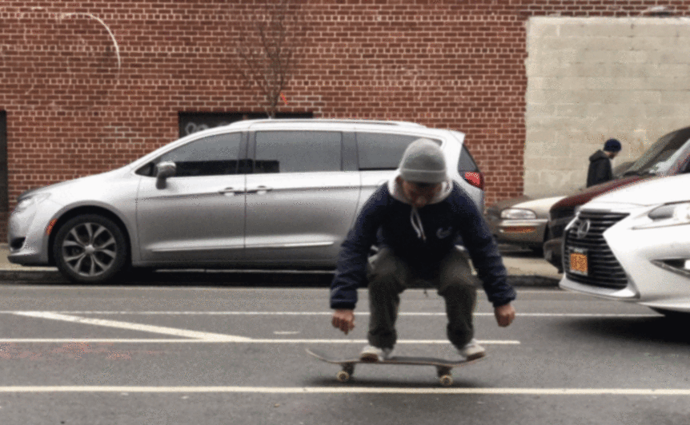

Now you understand the motion. All thats left is to land it! This part is all about timing. Once you have successfully popped, and flicked your heel off the edge of the nose, watch as the board flips underneath you. It's important to stay on top of the board and follow its motion! Wait for the complete rotation, and slam down once you see the top of your board! Seriously catch and slam it down to the gorund. Avoid slamming too early or too late, wait to see the top of your board. Avoid flicking too hard as you can likely kick board out and send it flying away. Practice it continuously until it feels natural to perform it as one flowing action. Once you have mastered this procedure, your heelflip should look something like this: 